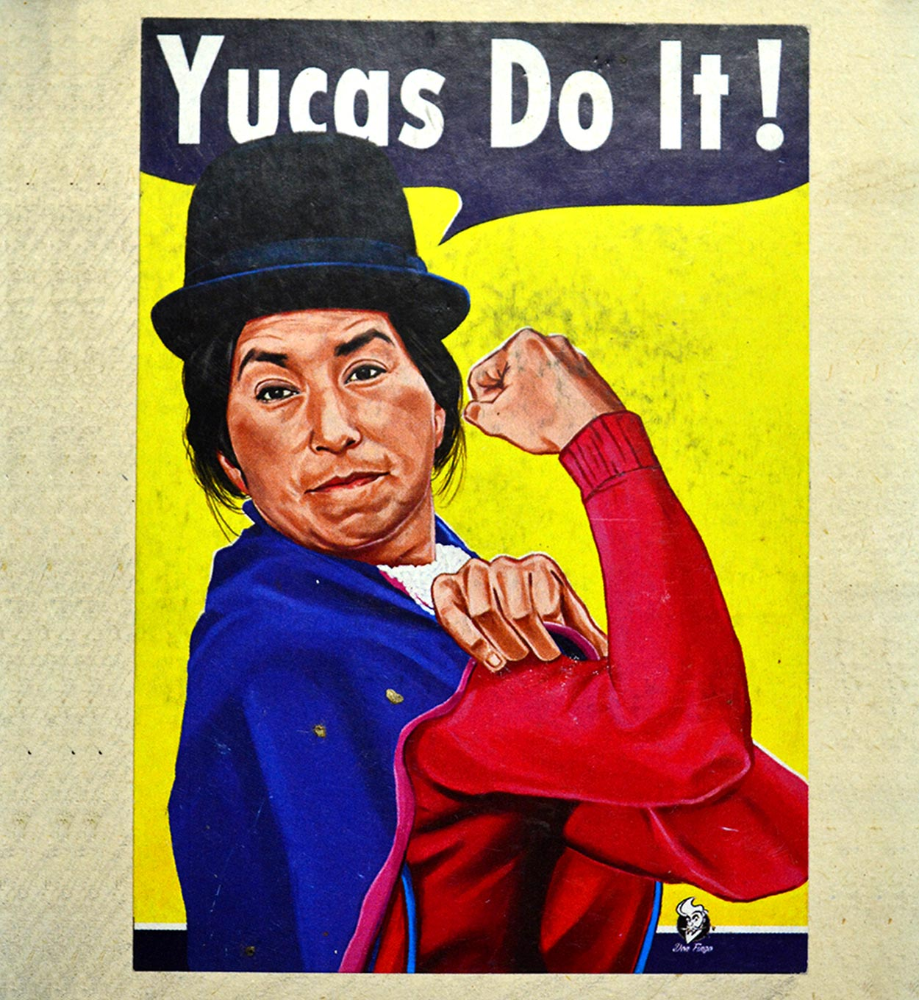

Don Fingo
Don Fingo gathers several items: illustration, physiognomic caricature and opinion caricature. Leonardo Arias is the character behind the brand. It is an exercise in creation based on humorous reflection, where both elements of visual arts and graphic design intervene. It is intended to generate identification from the Creole appropriation of iconic images (especially posters). It deals with a complex pedagogy, regarding social reflections, contained in a simple channel: humor.
Follow him on Instagram: @donfingo.caricaturista